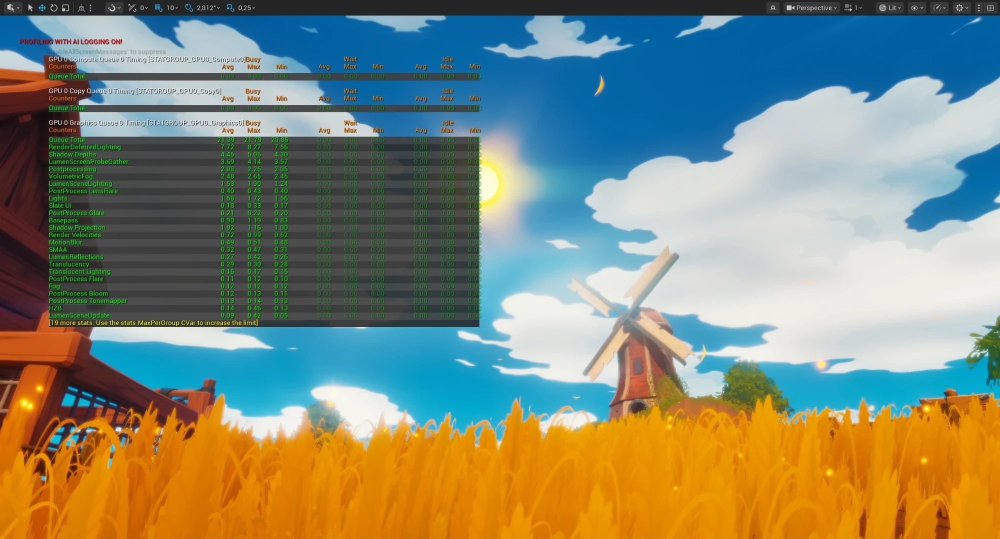
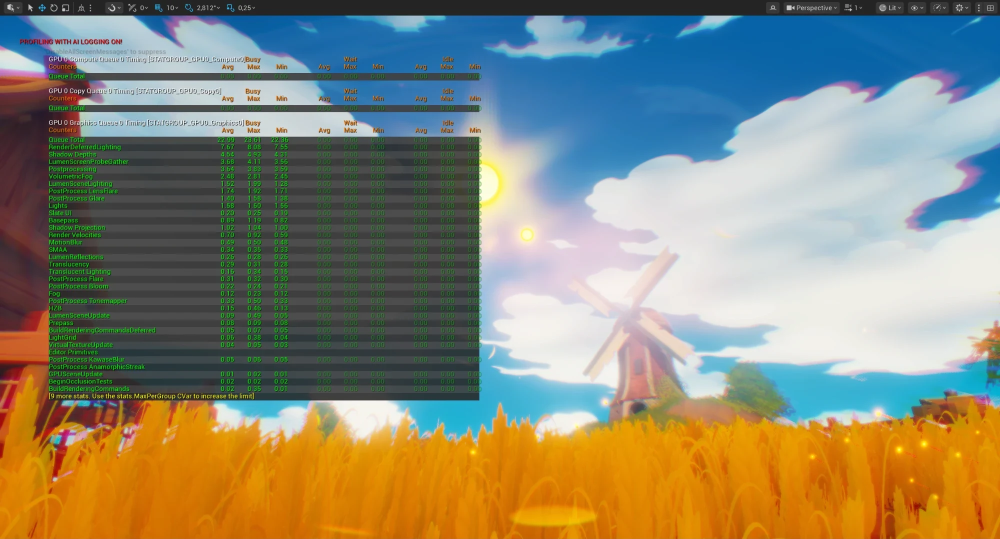

Reference
Performance
How much GPU time HLSLens takes depends far more on how you set it up than on the plugin itself. In the tests below it ranged from slightly cheaper than the engine's own post-processing to about half again as expensive, in the same scene, just by changing the lens flare profile. So instead of one number, this page shows what each effect costs, what drives the cost and how to measure it in your own project.
All tests were measured on a GTX 1080 at 2560×1440 with SMAA. A newer GPU will be faster, a lower resolution cheaper, and your scene will behave differently. Take the numbers as examples, not promises.
Cost per effect
Measured in the farm scene described below, with one effect changed at a time.
Lens flares and bloom
These have their own passes in stat gpu. PostProcess LensFlare is the whole lens flare. PostProcess Glare and PostProcess Flare (ghosts and halo) are parts of it.
| Effect | GPU time | Notes |
|---|---|---|
| Lens flares, Classic Prime | 1.60 ms | Three Streak glare 1.42 ms, ghosts and halo 0.15 ms |
| Lens flares, Diffraction Star | 1.27 ms | Diffraction Starburst glare 1.14 ms, ghosts and halo 0.11 ms |
| Lens flares, Anamorphic Azure | 0.40 ms | Directional Blur glare 0.21 ms, ghosts and halo 0.11 ms, streak 0.05 ms |
| Bloom, Standard | 0.12 ms | The default |
| Bloom, Cinematic | 0.22 ms | — |
The glare is almost the whole cost of the lens flares. The ghosts and halo take a small fraction, and the streak is the cheapest part at 0.05 ms.
The lens flare quality mostly changes the ghosts. With the Diffraction Star profile:
| Lens Flare Quality | Lens flares | Ghosts and halo | Postprocessing total |
|---|---|---|---|
| Performance | 1.24 ms | 0.11 ms | 2.83 ms |
| Standard | 1.27 ms | 0.11 ms | 2.88 ms |
| Cinematic | 1.55 ms | 0.44 ms | 3.12 ms |
In this scene Performance saved very little over Standard, while Cinematic added about a quarter of a millisecond for sharper ghosts. A scene with more or bigger ghosts on screen will show a bigger difference.
Effects in the tonemapper pass
Chromatic aberration, film grain, halation and lens distortion run inside the tonemapper pass, so their cost is how much that pass grows. On its own, the ACES tonemapper pass took 0.14 to 0.16 ms.
| Effect | Added cost |
|---|---|
| Chromatic aberration, Spectral | about 0.19 ms |
| Chromatic aberration, Basic | about 0.02 ms |
| Film grain | about 0.03 ms |
| Lens distortion | about 0.02 to 0.03 ms |
| Halation | about 0.01 ms |
These are small enough that normal measurement noise matters. The tonemapper pass moves by a few hundredths of a millisecond on its own, so halation in particular was too cheap to measure exactly.
Memory
Memory use is about the same as the engine's. Measured with stat RHI, with bloom and lens flares on (Diffraction Star, Standard quality):
| Memory type | Engine | HLSLens | Difference |
|---|---|---|---|
| 2D render targets | 605.96 MB | 604 MB | about 2 MB less |
| 3D render targets | 0.44 MB | 0.69 MB | 0.25 MB more |
| Structured buffers | — | — | 0.13 MB more |
Reducing the cost
- Pick the glare mode with care. It is the biggest single cost. Directional Blur is far cheaper than Three Streak or Diffraction Starburst: in the farm test Anamorphic Azure was 1.1 ms cheaper than Classic Prime.
- Leave unused effects at exactly 0.0. Then they don't run at all.
- Use Basic chromatic aberration if you don't need the Spectral look. It costs about a tenth as much.
- Keep bloom and lens flares on Standard quality unless you can see the difference.
- Use ACES if you don't need the Perceptual tonemapper. It saved about 0.14 ms in the custom test level.
- Set the threshold mode to Shared when you use both bloom and lens flares.
Measuring it yourself
The only numbers that really count are the ones from your own scene on your target hardware.
- Open the console and type
stat gpu. - Look at the Postprocessing row for the total. The HLSLens passes show up as PostProcess LensFlare, PostProcess Glare, PostProcess Bloom, PostProcess Tonemapper and so on.
- Keep the camera still and wait a few seconds so the averages settle. Use the Avg column.
- Change one thing at a time, and compare with the same camera and the same effects turned on in the engine's Post Process Volume.
Numbers measured in the editor include some editor overhead. A packaged or Standalone build gives cleaner results.
Benchmark summary
Each test is compared with the engine's default post-processing in the same scene: ACES tonemapper, lens flares and bloom.
| # | Scene | HLSLens configuration | Engine / HLSLens | Difference |
|---|---|---|---|---|
| 1 | Farm | ACES, bloom, lens flares: Classic Prime (Three Streak glare) | 2.15 / 3.19 ms | +1.04 ms (+48%) |
| 2 | Farm | ACES, bloom, lens flares: Diffraction Star (Diffraction Starburst glare) | 2.15 / 2.88 ms | +0.73 ms (+34%) |
| 3 | Farm | ACES, bloom, lens flares: Anamorphic Azure (Directional Blur glare) | 2.15 / 2.08 ms | −0.07 ms (−3%) |
| 4 | Soul City | Perceptual tonemapper, lens flares, bloom, halation | 1.40 / 1.65 ms | +0.25 ms (+18%) |
| 5 | Soul City | Every major effect: Perceptual tonemapper, lens flares (Three Streak glare), bloom, chromatic aberration (blurred), film grain, halation | 1.40 / 2.05 ms | +0.65 ms (+46%)* |
| 6 | Custom level | Perceptual tonemapper, lens flares (Three Streak glare), bloom, halation | 2.75 / 3.39 ms | +0.64 ms (+23%) |
| 7 | Custom level | ACES tonemapper, lens flares (Directional Blur glare), bloom, halation | 2.74 / 3.06 ms | +0.32 ms (+12%) |
| 8 | Custom level | Perceptual tonemapper, lens flares (Directional Blur glare), bloom, halation | 2.74 / 3.20 ms | +0.46 ms (+17%) |
* The engine baseline in test 5 did not include chromatic aberration or film grain, so it is not a like-for-like comparison.
Tests 1 to 3: farm scene
A sunny stylized scene looking toward the sun, so there is a lot of bright sky for the flares and glare to work with. Only bloom and lens flares were on, every other HLSLens effect was off, and all runs used ACES, Standard bloom quality and Standard lens flare quality. The only thing that changed between the HLSLens runs was the lens flare profile. Measured in the editor viewport on a GTX 1080 at 2560×1440 with SMAA.
| Run | Postprocessing | Whole frame (GPU) |
|---|---|---|
| Engine default | 2.15 ms | 21.77 ms |
| Classic Prime | 3.19 ms | 22.44 ms |
| Diffraction Star | 2.88 ms | 22.34 ms |
| Anamorphic Azure | 2.08 ms | 21.39 ms |
Put next to the whole frame, the difference is small: under 1 ms out of about 22 ms, a few percent. Lighting, shadows and Lumen take far more. The whole-frame numbers also move by a few tenths of a millisecond from run to run, so don't read too much into small differences there.
A few of the captures as examples. The last one is from the per-effect tests and shows the tonemapper pass growing to 0.33 ms with Spectral chromatic aberration.





Click an image to open it at full size.
Tests 4 and 5: Soul City
Soul City is an Epic Games sample. The default post-processing was kept as Epic set it up, with only the exposure reduced. Measured on a GTX 1080 at 1440p.
In the engine's run only lens flares, bloom and tonemapping were enabled. The HLSLens run also had halation enabled.

Tests 6 to 8: custom test level
The same scene with different HLSLens configurations.